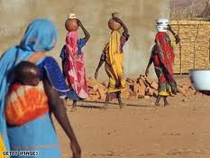

پذيرش > تریبون > مقالات > امید به کاهش مرگ و میر مادران در پی استقلال سودان جنوبی


 امید به کاهش مرگ و میر مادران در پی استقلال سودان جنوبی امید به کاهش مرگ و میر مادران در پی استقلال سودان جنوبی
18 تیر 1390 - منبع: آی پی اس - ترجمه: سیمین رادمنش - نسخه قابل چاپ
تغییر برای برابری: "جسيكا فوني"، 36 ساله و مادر هشت فرزند اميدوار است كه استقلال به اين معنا باشد كه به زودي بيمارستاني در روستاي محل زندگي او ساخته خواهد شد. فوني كه از يك روستاي دورافتاده در جنوب سودان براي جشن استقلال به پايتخت سفر كرده بود دو نوزاد خود را درهنگام تولد به دليل كمبود امكانات پزشكي در روستاي خود از دست داده است.
او گفت: " من از روستاي بسيار دوري آمده ام كه فاقد هرگونه امكانات پزشكي است. من دو فرزند خود را به دليل مشكلات مربوط به زايمان از دست داده ام. دولت جديد ما بايد بيمارستان هايي را نزديك به منطقه ي ما بسازد، به طوري كه ما دسترسي به امكانات دارويي داشته باشيم."
سودان جنوبي داراي يكي از بالاترين سرانه هاي مرگ و مير مادر و كودك در جهان است. از هر 100.000 زايمان، 2054 زن مي ميرند.
دكتر "عبدي نصير ابوبكر"، مدير مسئول پزشكي سازمان بهداشت جهاني – دابليو.اچ.او- در بخش سودان جنوبي مي گويد: وضعيت خشن و نامطلوب زندگي به علاوه ي دسترسي بسيار محدود به خدمات اوليه ي درماني عامل وضعيت فعلي بخش فقير جامعه است.
با توجه به گزارش يونيسف در سال 2008 از وضعيت كودكان جهان و سلامت خانگي در سودان، از هر 1000 مورد زايمان در موسسات بهداشتي، 102 نوزاد مي ميرند.
همچنين مشخص شده است كه تنها 48 درصد از زنان سوداني در دوران بارداري موفق به استفاده از تسهيلات پزشكي مي شوند و تنها 13 درصد از آن ها در بيمارستان ها تحت نظر متخصصين – تنها 10 درصد كادر درماني را تشكيل مي دهند- زايمان مي كنند.
"گريس جوآن"، 26 ساله و مادر 5 فرزند مي گويد او هيچ كدام از فرزندانش را در بيمارستان به دنيا نياورده است.
او مي گويد: "وقتي زمان زايمان ام مي رسد من فقط يكي از همسايگان را جهت كمك براي زايمان فرزندم خبر مي كنم. اما خوشحالم كه ما آزادي داريم، چيزي كه دولت را قادر به ارائه ي تسهيلات بهداشتي به همه ي مردم خواهد كرد،به اين صورت زنان و كودكان بر اثر بيماري هاي قابل پيشگيري نخواهند مرد."
ابوبكر مي گويد: تنها 25 درصد از مردم سودان جنوبي به امكانات پزشكي و درماني دسترسي دارند، اين مسئله ارائه ي خدمات به مردم را سخت مي كند. او مي گويد: "بيماري هاي قابل پيشگيري عفوني مانند مالاريا، ذات الريه ي احتمالي و اسهال در اكثر تشخيص هاي گزارش شده در زمينه ي امكانات بهداشتي و از تمام گروه هاي مرتبط با بهداشت و سلامت گزارش شده است. بيماري هاي عفوني قابل پيشگيري و سوء تغذيه شايع ترين علل بروز عوارض جانبي و مرگ و مير در كودكان زير 5 سال هستند.
اما همزمان با آماده شدن سودان براي برپايي جشن استقلال در 9 جولاي، كارشناسان و قانون گذاران همگي توافق دارند كه براي رسيدگي به بخش سلامت در كشور بايد گام هاي فوري اي برداشته شود.
دكتر" اوليويا لومور" معاون وزارت بهداشت مي گويد: دولت از وضعيت آگاهي دارد و اقداماتي براي رسيدگي به اين مشكل در نظر گرفته است. او مي گويد: " براي پنج سال گذشته، از زمان توافق نامه ي جامع صلح، دولت مسئوليت پرداخت حقوق تمام كاركنان بخش بهداشت و درمان را به عهده گرفته است. همچنين دولت تمام داروهاي ضروري را براي بخش هاي درماني تهيه و توزيع مي كند. ما در ماه گذشته اولين نشست خود را در زمينه ي بهداشت و سلامت براي بحث در مورد راه هاي بهبود بخش سلامت داشته ايم."
"رابرت كيماني" كه صاحب يك داروخانه ي كوچك در "جوبا" است مي گويد: زندگي در شهر بسيار گران است و مردم حتا در صورت بيماري هزينه ي بيشتري براي خريد مواد غذايي به نسبت دارو ميكنند.
دكتر" مشاك عدن" كه در بيمارستان مرجوعين جوبا، بزرگترين و تنها مركز ارجاع در كشور، مشغول به كار است مي گويد: دولت بايد مردم را به استفاده از امكانات و خدمات پزشكي موجود تشويق كند. او مي پرسد: " 75 درصد از مردم ما كه خدمات درماني دريافت نمي كنند كجا هستند؟"
دكتر لومور مي گويد: دولت در همكاري با "دابليو.اچ.او" (سازمان بهداشت جهاني) چهارچوبي پنج ساله در زمينه ي برنامه ي بهداشت ملي را پيش نويس كرده است كه دولت را متعهد به رسيدگي به وضعيت سلامت در كشور مي كند. خط مشي اين چهارچوب به دولت اين امكان را مي دهد كه مشكل كمبود شديد پرسنل را به وسيله ي آموزش نيروهاي جديد براي بهبود خدمات بهداشتي رفع كند.
ابوبكر مي گويد: تنها 10 درصد از قسمت نيروهاي انساني مورد نياز توسط كاركنان واجد شرايط و متخصص پر شده است و نياز مبرم و فوري اي به آموزش پزشكان، مسئولان كلينيك ها و ماماها در بين ديگران براي ارائه ي بهترين خدمات به مردم احساس مي شود.
او از دولت خواست تا براي بازسازي تجهيزات پزشكي ويران كشور و بهبود زيرساختي اقدام كند، به طوري كه كاركنان بخش بهداشت و سلامت بتوانند پاسخگوي شرايط اضطراري باشند.
ارسال به
بالاترین
،
توییتر
،
فریندفید
،
فیسبوک
در همين بخش :
 دهمین دورۀ مراسم تندیس صدیقه دولت آبادی ۱۳۹۲ دهمین دورۀ مراسم تندیس صدیقه دولت آبادی ۱۳۹۲
کارت پستالهایی به بهانهی هشت مارس و به یاد همهی مبارزین راه برابری
بیانیه بیش از 350 تن از مدافعان حقوق زنان به مناسبت روز جهانی زن؛ زنان هر روز فرودستتر میشوند
لباسی که برای تن ما دوخته اند! /اعظم بهرامی
چالشها و چشمانداز فعالیت مدنی زنان
ديگر بخش ها :
طرح یک میلیون امضا
|
مقالات
|
سایت نوشته ها
|
اخبار
|
گزارش كمپين
|
گفت و گو
|
علیه سکوت
|
كوچه به كوچه
|
نامه های شما
|
گزارش ویژه
|
گفتگو با اعضا
|
ویژه سالگرد کمپین
|
تصویر برابری
|
دل آرام علی
|
تریبون
|
مقالات
|
تاریخ شفاهی
|
خارج از چارچوب
|
کتابخانه
|
درباره کمپین
|
کمپین در شهرها
|
کمپین در بند
|
صدای تغییر
|
ویژه 22 خرداد
|
لایحه حمایت از خانواده
|
گالری
|
عشا مومنی
|
امیر یعقوبعلی
|
خدیجه مقدم
|
راحله عسگری زاده و نسیم خسروی
|
پروین اردلان،جلوه جواهری، مریم حسین خواه، ناهید کشاورز
|
زینب پیغمبرزاده
|
سعیده امین، سارا ایمانیان، محبوبه حسین زاده، ناهید کشاورز و همایون نامی
|
احترام شادفر
|
نسیم سرابندی زاده،فاطمه دهدشتی
|
وبلاگ مهمان
|
پرونده خرم آباد
|
دستگیری ها
|
مریم مالک
|
پرستو اللهیاری
|
مهرنوش اعتمادی
|
سمیه رشیدی
|
Other Languages
|
همراهان
|
«فراخوان کمپین ده روز با بهاره هدایت»
| English
|